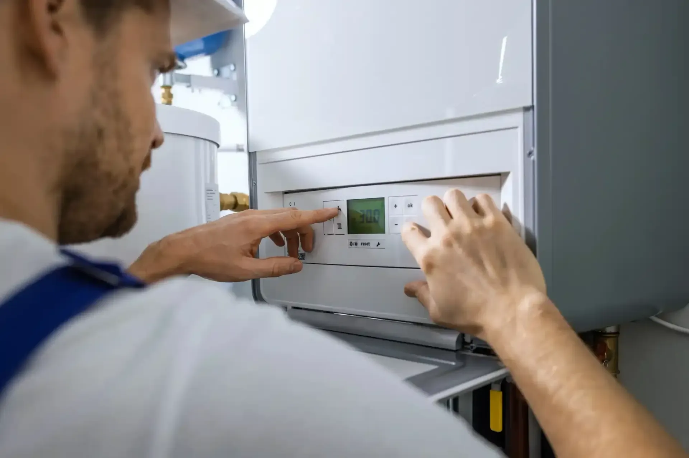
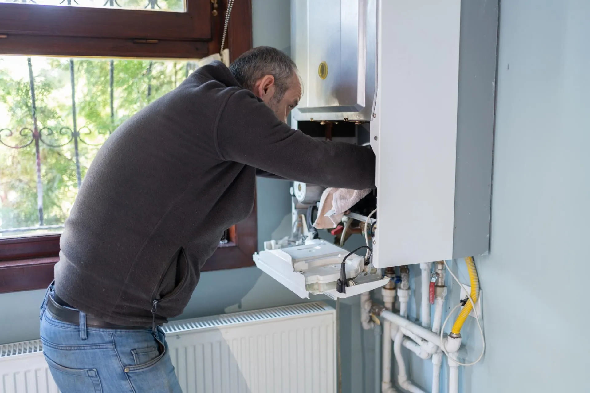
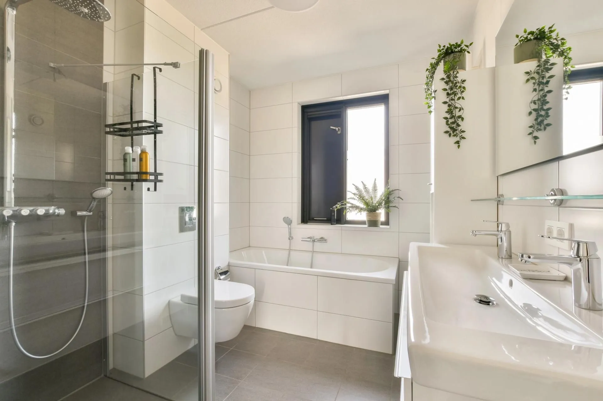
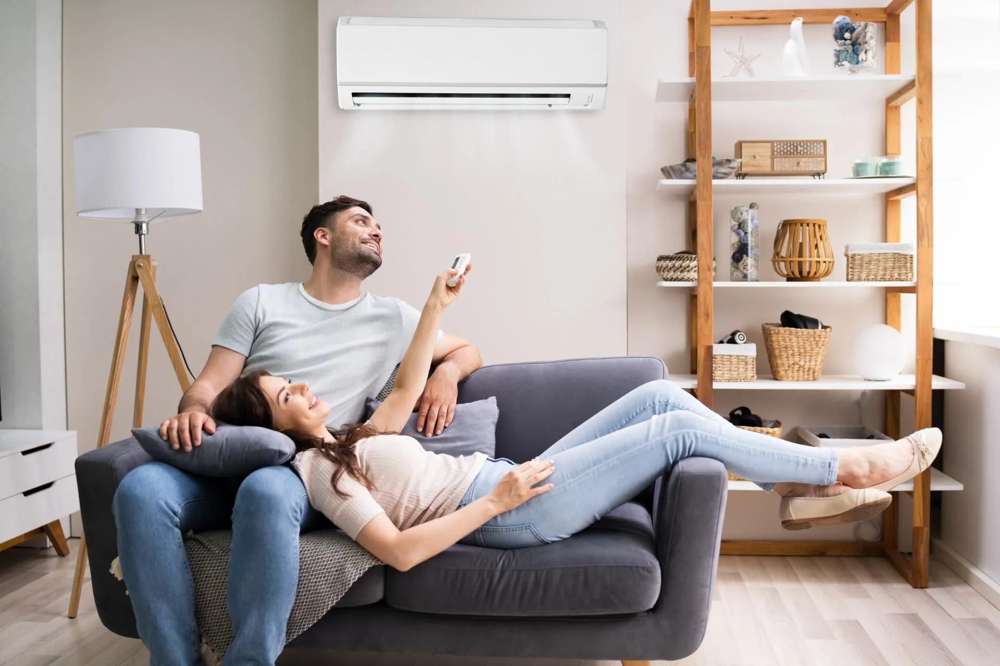
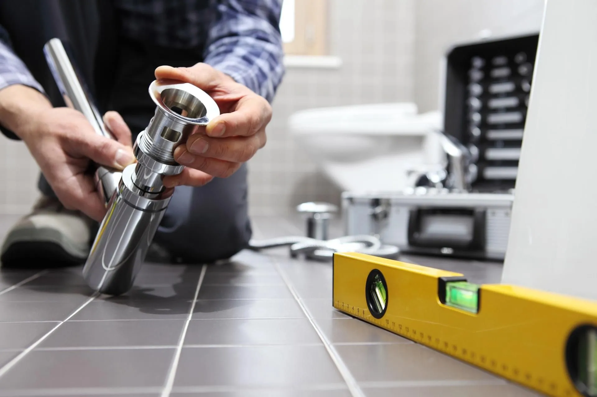

Ci racconti il progetto
Chiamaci e descrivi ciò di cui hai bisogno, indicando la zona dell’intervento.
IDRAULICA G.B. · SAMARATE
Riscaldamento, impianti idraulici e climatizzazione.
Caldaie, pompe di calore e bagni a Samarate e in provincia di Varese.
Un riferimento vicino a te.
Per la tua casa, per il tuo comfort.

01 / SOLUZIONI PER LA CASA
Dal riscaldamento agli impianti idraulici, dal bagno alla climatizzazione: ogni intervento parte dalle esigenze dei tuoi ambienti. Scopri i nostri servizi.

01Installazione e sostituzione della caldaia, con attenzione alle esigenze della tua abitazione.
Scopri il servizio 02
02Soluzioni per il riscaldamento e il comfort, valutate in base all’immobile e all’impianto.
Scopri il servizio
03Impianti, sanitari e rubinetteria: la parte idraulica del tuo nuovo bagno.
Scopri il servizio
04Installazione e manutenzione dei climatizzatori per vivere meglio i tuoi spazi.
Scopri il servizio
02 / CHI SIAMO
IDRAULICA G.B. DI GIORGIO BONADDIO si occupa di impianti idraulici e termoidraulici a Samarate e in provincia di Varese.
Ci occupiamo di impianti per le abitazioni e di soluzioni termiche e di climatizzazione anche per ambienti professionali. Ascoltare, valutare e intervenire: è da qui che comincia ogni lavoro.
ConosciamociPartiamo dalle tue esigenzeOgni casa ha spazi e abitudini diversi.
Guardiamo all’impianto nel suo insiemePer integrare la soluzione nel contesto giusto.
POMPE DI CALORE
Vuoi ripensare il riscaldamento? Valutiamo la compatibilità dell’impianto e le caratteristiche dell’immobile per capire se una pompa di calore è la soluzione adatta.
Scopri le pompe di calore
03 / COME INIZIARE
Chiamaci e descrivi ciò di cui hai bisogno, indicando la zona dell’intervento.
Confrontiamo le necessità con le caratteristiche dell’immobile e dell’impianto.
Concordiamo i passaggi dell’intervento e la disponibilità per realizzarlo.
04 / IL NOSTRO TERRITORIO
Operiamo in provincia di Varese. Per verificare la disponibilità nel tuo comune, basta una telefonata.
Verifica la disponibilitàE nei comuni limitrofi della provincia.
LE RISPOSTE, SENZA GIRI DI PAROLE
Chiamaci al numero indicato sul sito. Raccontaci di cosa hai bisogno e dove si trova l’immobile: concorderemo il passo successivo.
Installazione e sostituzione caldaie, pompe di calore, lavori idraulici per la ristrutturazione del bagno e climatizzazione.
Sì, operiamo in provincia di Varese, anche a Busto Arsizio, Gallarate, Varese, Saronno, Tradate e nei comuni limitrofi. Chiamaci per verificare la disponibilità.
Contattaci telefonicamente, indicando il comune e il tipo di lavoro richiesto, per concordare la disponibilità.
IL PROSSIMO PASSO È SEMPLICE
Un nuovo impianto, una sostituzione, un bagno da ripensare.
Partiamo da una telefonata.